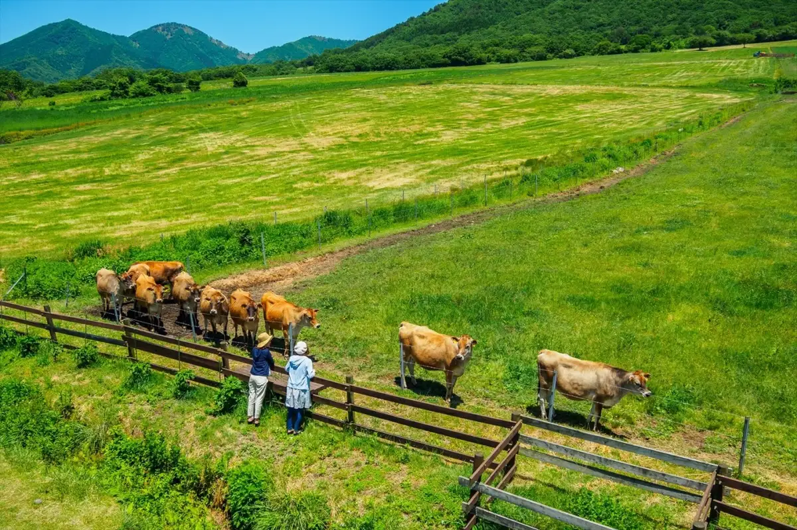
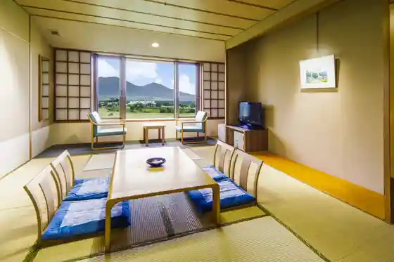
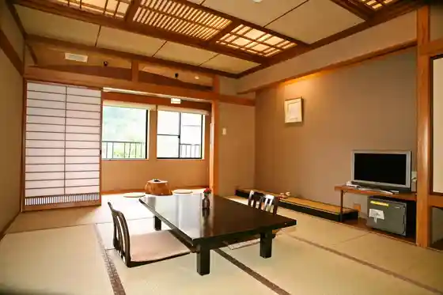
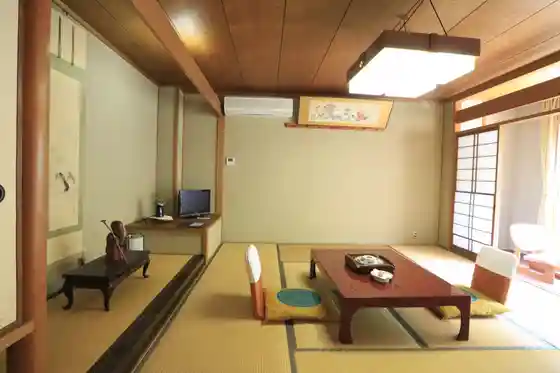
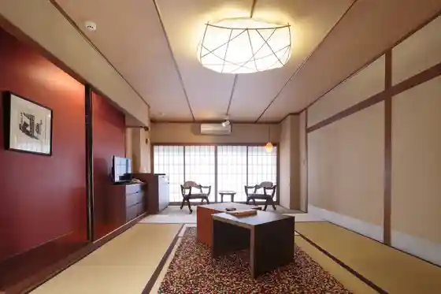
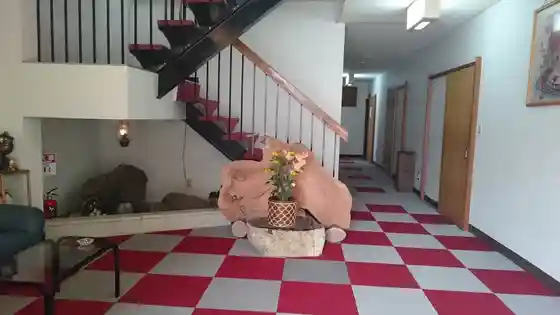
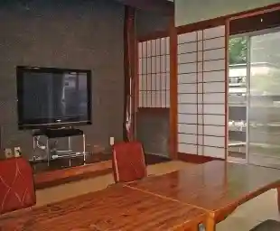
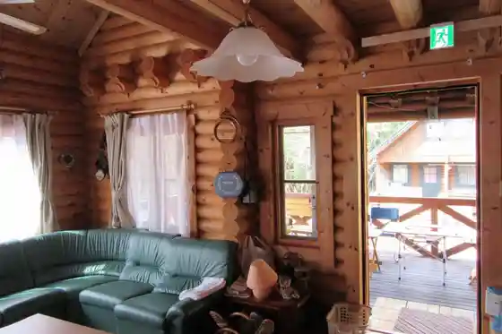

Maniwa
Maniwa · Okayama
Maniwa
Highlighted on the Okayama map.

Stay
Kyuka Village Hiruzen Highlands

Yu no Kura Tsuruya

Genroku Hatago Aburaya

Hakkei

Jodama Ya Ryokan

Ryokan Kajika So

Aiken Dohan Hiruzen Kashibesso JUN Rogu
